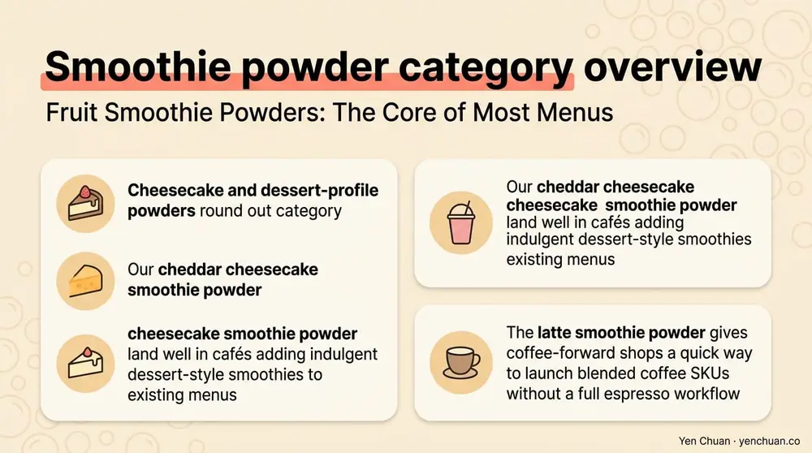
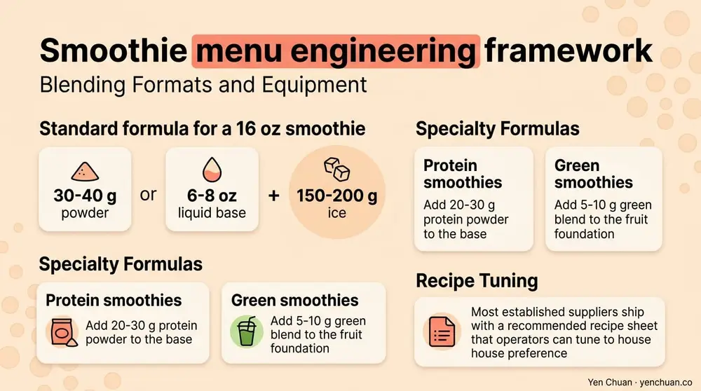

文章 / 經營與採購
Smoothie Powder Wholesale: Fruit, Protein & Greens
這篇是英文原文，尚未完成繁體中文翻譯。中文選單與相關商品連結不會切回英文介面。

查看英文原文（尚未翻譯）
Smoothie powder is one of the quietest growth categories in beverage wholesale — a format that doesn't get the packaging hype of ready-to-drink protein or the menu glamour of signature milk teas, but lands steady margin on cafés, gyms, juice bars, and bubble tea shops building a non-tea drink section. Grand View Research pegged the global smoothie market at over USD $16 billion in 2024 with a 7.5% CAGR through the decade, and powder-based concentrates are eating share from frozen-fruit workflows because they hit consistency, cost, and shelf-life targets frozen can't match. This guide covers how a smoothie powder supplier wholesale lineup breaks down into fruit, protein, and green-nutrition SKUs, where each category fits on a menu, and what procurement questions separate a real manufacturer from a repackager.
Why Powder Beats Frozen for Commercial Menus
Frozen fruit is the traditional smoothie base and still the right choice for operators marketing a whole-food, fresh-frozen story. For most commercial menus, though, powder outperforms on the operating variables that matter.
Consistency is the biggest one. A frozen mango smoothie varies batch to batch depending on the fruit ripeness, freezer burn, and ice ratio. A powder-based mango smoothie tastes the same in Taipei, Toronto, and Tampa. Shelf life stretches from 6-12 months frozen to 18-24 months ambient for most powders. Storage footprint drops — a single 1 kg pouch of powder replaces roughly 8-10 kg of frozen fruit for equivalent serving count. And training overhead shrinks dramatically because scoop-and-blend is faster than portion-and-blend.
The trade-off is the ingredient story. Powder needs to be engineered well to deliver fresh character, and it can't match the visible fruit-chunk aesthetic that some premium menus require. The working pattern in the field is frozen for signature or "premium fresh" SKUs and powder for core menu, volume drinks, and to-go formats.
Fruit Smoothie Powders: The Core of Most Menus
Fruit smoothie powder uses spray-dried or freeze-dried fruit concentrate blended with sugar, dextrose or maltodextrin, natural flavor, and color stabilizers. The better formulations include real fruit solids (10-30% by weight depending on fruit cost) and acidifier to preserve the fresh-acid balance of the original fruit.
Mango, strawberry, passion fruit, lychee, and mixed berry are the top five SKUs globally based on the order patterns we see at Yen Chuan. Tropical blends — mango-passion-pineapple, for instance — hit growth cycles during summer and stay on menus as permanent fixtures in warm-climate markets.
Cheesecake and dessert-profile powders round out the category. Our cheddar cheesecake smoothie powder and cheesecake smoothie powder land well in cafés adding indulgent dessert-style smoothies to existing menus, and the latte smoothie powder gives coffee-forward shops a quick way to launch blended coffee SKUs without a full espresso workflow.

Protein Powders: From Gym Crossover to Mainstream
Protein-fortified smoothies have moved past gym-adjacent cafés into mainstream bubble tea and juice bar menus. The 2024 Innova Market Insights trend report showed 38% year-over-year growth in global beverage SKUs carrying a high-protein claim, and Q1 2025 data from NielsenIQ confirmed the trend extended into retail ready-to-drink.
Three protein sources dominate commercial smoothie powder formulations. Whey protein concentrate (WPC) carries the most flavor-neutral profile and mixes cleanly into fruit or dessert smoothies. Whey protein isolate (WPI) is lactose-reduced and suits menus serving lactose-sensitive customers. Plant proteins — pea, soy, brown rice — are essential for vegan-friendly menus and for markets where dairy-free positioning is strong.
Typical serving targets are 15-25 g of protein per 16 oz smoothie, which requires 20-35 g of protein powder blended with fruit powder and liquid base. Menu pricing premium for "high protein" claims usually lands 20-35% above the equivalent fruit-only SKU, with the math working because protein powders are cost-efficient per gram despite their raw price.
A word on labeling: protein content claims are regulated. In the US, an "excellent source of protein" claim requires ≥20% DV (10 g) per serving, and "high protein" requires ≥20% DV as well per FDA 21 CFR 101.54. Don't make the claim on a menu unless your final-drink formulation supports it — customers (and competitors) increasingly check.
Green Powders: The Functional Premium Tier
Green smoothie powders occupy the wellness-premium tier. These blends mix vegetable powders (kale, spinach, wheatgrass, barley grass), algae (spirulina, chlorella), superfruit powders (acai, goji), and sometimes probiotics or adaptogens. They're the smallest volume of the three categories in most commercial menus but carry the highest menu prices and strongest repeat-customer metrics.
Quality fault lines open up fast in green powders. The vegetable content should be real spray-dried or freeze-dried vegetable, not a ground-leaf filler. Heavy-metal testing matters because algae and some greens concentrate lead and cadmium from source water — reputable suppliers issue COAs with heavy-metal results for each lot. Chlorophyll retention data tells you how well the powder holds color through 12 months of shelf life; a dull-brown green powder signals aged or poorly processed product.
For operators adding green smoothies to a bubble tea or café menu, pair the powder with a real juice base rather than water to mask the vegetable edge and deliver flavor that customers come back for. Pineapple-coconut, apple-lemon, and mango-orange all work as green-smoothie liquid bases.
Blending Formats and Equipment
Commercial smoothie powder assumes a high-speed blender — typically 2-3 HP countertop units (Vitamix, Blendtec, Hamilton Beach commercial) that can emulsify powder into ice and liquid in 25-45 seconds. Lower-powered blenders leave gritty texture that customers reject.
Standard formula for a 16 oz smoothie is 30-40 g powder + 6-8 oz liquid base (milk, juice, water) + 150-200 g ice. Protein smoothies add 20-30 g protein powder to the base; green smoothies add 5-10 g green blend to the fruit foundation. Most established suppliers ship with a recommended recipe sheet that operators can tune to house preference.

Sourcing Scorecard
A working procurement scorecard for smoothie powder covers six variables.
| Variable | What to Ask For |
|---|---|
| Real fruit/vegetable content | Percentage by weight, verified on TDS |
| Sugar level | Grams per serving, added vs fruit sugar breakdown |
| Protein type & quality | Source (whey, pea, etc.), PDCAAS score if available |
| Heavy metals (green powders) | COA with lead, cadmium, arsenic, mercury data |
| Shelf life and storage | Unopened + opened, temperature requirements |
| Certifications | HACCP, ISO 22000, plus halal/kosher/vegan as relevant |
Reputable manufacturers share this documentation without being chased. For a broader look at sourcing standards across the powder category, our milk tea supplier guide covers vetting, pricing, and logistics principles that apply directly to smoothie powder as well.
MOQ, Lead Times, and Menu Launch Planning
Most Taiwanese smoothie powder manufacturers ship in 1 kg or 5 kg pouches with carton-level MOQs (6-12 pouches) for stock SKUs. Pallet pricing kicks in around 100-200 kg depending on the flavor. Custom blends — a proprietary menu SKU with specific protein level and flavor tuning — typically require 500-1,000 kg MOQ and 10-14 weeks of R&D and stability testing before first production.
Sea freight from Taiwan to major ports runs 3-4 weeks. Most chains batch their smoothie powder orders with other categories — syrups, tapioca pearls, milk tea powders — to share container space. The broader bubble tea powders catalog covers the adjacent flavors that typically ride in the same container.
About Yen Chuan
Yen Chuan has been at the heart of Taiwan's bubble tea industry for over 20 years, supplying premium powders, syrups, tapioca pearls, and tea leaves to thousands of boba shops worldwide. With an in-house R&D lab and a commitment to quality ingredients, Yen Chuan is more than a supplier — we're your partner in the boba business. Our smoothie powder lineup spans fruit, dessert-profile, and functional blends, with custom protein and green-powder development available for chains building differentiated menu programs.
Ready to Launch a Smoothie Section?
Looking for a smoothie powder supplier wholesale with real formulation depth? Browse our smoothie powder range or contact our team for samples and technical data — we ship worldwide from Taiwan and support custom formulations for chain partners.
Authority Citations
- Grand View Research — Global Smoothie Market Report, grandviewresearch.com
- Innova Market Insights — Beverage Trend Reports, innovamarketinsights.com
- NielsenIQ — Retail Beverage Category Analysis, nielseniq.com
- FDA — 21 CFR 101.54 Nutrient Content Claims, fda.gov
- USDA — Dietary Protein Guidelines, usda.gov
Frequently Asked Questions
Q: What's the difference between smoothie powder and protein powder? A: Smoothie powder is a flavored base that builds the drink's fruit, dessert, or green character, usually with some sugar and real fruit or vegetable content. Protein powder adds protein (whey, pea, soy, etc.) and typically has minimal flavor of its own. Menus often blend both to deliver a high-protein smoothie with fruit character.
Q: How long do smoothie powders last? A: Unopened commercial smoothie powders generally keep 18-24 months at ambient temperature in sealed pouches. Once opened, usable life drops to 3-6 months depending on humidity control. Resealing and storage in a dry environment away from heat is the single biggest factor in maintaining flavor and color.
Q: Can smoothie powder match the quality of frozen fruit smoothies? A: For consistency, cost, and operational simplicity, powder typically wins. For visible fruit chunks and a whole-food marketing story, frozen fruit wins. Most successful menus use a tiered strategy — powder for core high-volume items and frozen for signature or premium SKUs.
Q: Are protein smoothies subject to labeling regulations? A: Yes. In the US, claims like "high protein" or "excellent source of protein" require ≥10 g of protein per serving (20% DV) under FDA 21 CFR 101.54. Check that the finished drink — not just the powder — meets the threshold before putting the claim on a menu board or printed menu.
Q: What MOQ should I expect when sourcing smoothie powder wholesale? A: Stock flavors typically ship in 1-5 kg pouches with carton-level MOQs (6-12 pouches). Pallet pricing starts around 100-200 kg. Custom formulations — chain-exclusive flavor and protein tuning — require 500-1,000 kg MOQ and 10-14 weeks R&D before commercial production.